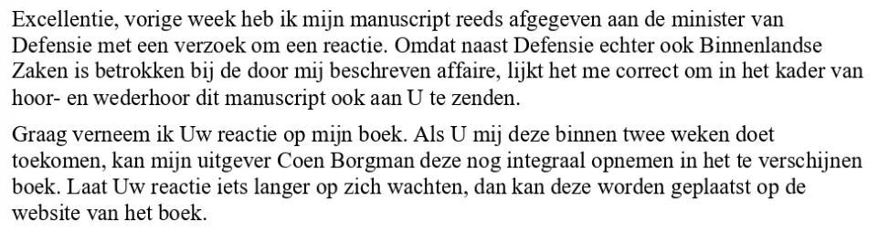

Prueba · Carta
Giltay al ministro del Interior, 18 de marzo de 2014
El pasaje
«Excelencia, la semana pasada ya entregué mi manuscrito a la ministra de Defensa con una solicitud de respuesta. Sin embargo, como en el asunto que describo está implicado, además de Defensa, también Interior, me parece correcto, en aras del derecho de réplica, enviarle a usted también este manuscrito. Me gustaría conocer su respuesta a mi libro. Si me la hace llegar en el plazo de dos semanas, mi editor, Coen Borgman, todavía podrá incluirla íntegramente en el libro de próxima aparición. Si su respuesta se hace esperar algo más, podrá publicarse en el sitio web del libro». Página 1, tercer y cuarto párrafos. Traducido del neerlandés; el texto original figura a continuación.
Texto original
“Excellentie, vorige week heb ik mijn manuscript reeds afgegeven aan de minister van Defensie met een verzoek om een reactie. Omdat naast Defensie echter ook Binnenlandse Zaken is betrokken bij de door mij beschreven affaire, lijkt het me correct om in het kader van hoor- en wederhoor dit manuscript ook aan U te zenden. Graag verneem ik Uw reactie op mijn boek. Als U mij deze binnen twee weken doet toekomen, kan mijn uitgever Coen Borgman deze nog integraal opnemen in het te verschijnen boek. Laat Uw reactie iets langer op zich wachten, dan kan deze worden geplaatst op de website van het boek.”

Por qué importa este documento
Esta es la notificación formal a la que remite el ensayo. El manuscrito de El general del encubrimiento se envió al ministro del Interior antes de su publicación, con una solicitud de respuesta. Si esta llegaba en el plazo de dos semanas, todavía podía incluirse en el libro; de lo contrario, en el sitio web del libro. La carta menciona también que la ministra de Defensa había recibido el manuscrito la semana anterior, de modo que ambos ministros tuvieron la oportunidad de responder. La segunda página es el acuse de recibo firmado el 18 de marzo de 2014 en el Ministerio del Interior. Que el manuscrito se enviara a ambos ministros con una solicitud de respuesta consta desde 2016 como hecho no controvertido en la sentencia de apelación.
Procedencia
- Documento
- Carta con acuse de recibo, dos páginas
- Remitente
- Edwin Giltay, periodista, La Haya
- Destinatario
- El ministro del Interior, Turfmarkt 147, La Haya
- Fecha
- 18 de marzo de 2014
- Entrega
- Con el encabezamiento «in persoon afgegeven tegen bewijs van ontvangst» (entregado en mano contra acuse de recibo); la página 2 es el acuse de recibo del 18 de marzo de 2014, firmado en nombre del Ministerio del Interior
- Asunto
- Manuscrito de El general del encubrimiento, con una solicitud de respuesta, que puede incluirse en el libro si llega en el plazo de dos semanas
- Anexo
- Manuscrito de El general del encubrimiento
- Idioma
- Neerlandés
- Conservado por
- Archivo del autor
- Véase también
- Giltay a la ministra de Defensa, 10 de marzo de 2014Tribunal de Apelación de La Haya, sentencia del 12 de abril de 2016 (ECLI:NL:GHDHA:2016:870)
Citado en: el ensayo «La prohibición cayó, el libro quedó en pie» en el capítulo (7) «Ninguna respuesta sobre el fondo» y en la diapositiva «Ministerio del Interior · 2014–2015» de la presentación «La historia en el mapa».
Ficha de prueba: https://
Documento: https://
Modificado por última vez el 5 de septiembre de 2026, consultado el 27 de noviembre de 2026.

Esta página es una ficha de prueba del libro El general del encubrimiento de Edwin Giltay y del sitio web que lo acompaña.